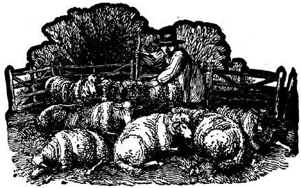

I'd like to add my two bits' worth to Feedback on Milk Sheep: Is Thatta Ewe, Mamma? We've been milking some of our woollies for a while now and I think I have a few relevant comments to offer.
First, let me tell you, it's not easy to find information about dairy sheep and I question the feedback's statement that "livestock books can tell you which domesticated breeds make the best mothers". Phooey! Such works generalize, and I sometimes suspect that their authors have spent very few nights in sub-zero weather crawling around the barn floor getting reluctant lambs to nurse, putting iodine on navels, etc. And if you write for breed association brochures, the pamphlets all brag about their favorites' mothering ability, milk production, etc.
When it came to production, the Dorset people bragged the most so I cornered the head honcho around here-a fellow whose family has raised the breed since the turn of the century-and learned that even Dorsets can't compete with dairy goats for output. According to a study done at Cornell University, common domestic sheep produce 1-1/2 to 2-1/2 quarts of milk a day which means that the best of the lot just equal our neighbor's worst milch doe. Much as we like their milk and its products, our ewes ain't Jersey cows by a long shot and I'll have to challenge the feedback writer's remarks about the "generous quantity" of a sheep's milk yield.
Incidentally, The Shepherd magazine recently showed a picture of a Turkish breed that's supposed to be the world's heaviest milker but added that-due to USDA red tape we'd better not look for any of these wonder sheep to show up in the good old U.S. of A. very soon.
Anyhow, about our own experience: We milked one of our old ladies twice a day for six weeks and she gave a smashing quart each time no more, no less-with fro sign of drying up when we quit the experiment.
We've had some problems selecting other ewes to milk. Two of ours have tiny teats and the one that's most productive (to judge from the large, fat twins she has each year) stands very nicely for me but I nearly went crazy trying to get hold of those teeny faucets! The fattest gal in the flock has teats about 3-1/2 inches long and an udder nearly as large as that of our neighbor's poorest dairy goat. The doe's owners insist that Fatty is our best prospect, but the ewe herself isn't any too thrilled about being milked. We'll try her again next lactation she seems to be getting friendlier in her old age.
"It takes 20 minutes to milk a sheep," says the author of the feedback. Sure, at first before you develop "milker's hands" and get a bit of cooperation from the ewes. We eventually brought our time down to 10-14 minutes altogether for two milkings (which is still longer than the process takes for a goat).
Oh, yes that business about ewes piddling while you milk is either Suffolk nervousness (our shearer raises the breed and says they're jumpy) or failure to make friends with the sheep.
One point that really ticked me off was the bit about the flavor of sheep's milk: "somewhere between cow's and goat's milk, with less aroma than the latter". If your cow's, goat's or sheep's milk has any "aroma", you'd better check your sanitation procedure! The 12 people who tested our ewes' product all thought the drink was delicious and couldn't believe us when we told them where it came from.
Well, all that is pretty minor but the feedback article did contain one serious mistake: YOU DON'T RAISE BABY LAMBS ON COWS MILK! Its composition is quite different from that of their natural food. Even feeding a ewe's milk replacer, you'll have a death rate of 50 percent or more if the young don't get any colostrum. (I snitched from the abovementioned fatso for our bottle baby's supply this year.)
Since lambs die very easily from overfeeding, you start them out on eight meals a day of only an ounce or so each. By the age of seven weeks the youngsters can be put on dry feed. Caution: You must give any such orphan a shot for "overeating disease" (enterotoxemia) and a round of antibiotic every 14 days or so or suffer the heartache of losing the sweetest little baby you ever had for a friend.
Think carefully before you undertake the orphan-raising bit: Milk replacer is very expensive, the hours are lousy, and the percentage of loss high. Lambs seem to be the least hardy farm infants (at least compared to our foals and the neighbors' kids, pigs, and calves).
By the way, the reader whose question about sheep appeared in Poppy George's column in MOTHER NO. 29 shouldn't have left his lambs to be docked at the ripe old age of four months. This operation should be done when the animals are only seven days old.
Unlike lambs, older sheep don't have to be pampered as much as the author of the feedback suggests. "A dietary supplement of calf's manna or grain with molasses"? Calf's manna costs about like porterhouse steak, folks. Holy fright, our girls supply their lambs and us with milk in exchange for half a pound of plain old corn and oats a day (plus all the grass they can stuff in). If you keep ewes worm-free, dry housed (which means clearing the muck out of their loafing barn), and healthy footed, they're pretty hardy old ladies. Oh, yes, and I go out and sit down with them and scratch their backs and chins and give them apples and carrots occasionally. A happy, healthy sheep is a twin producing, long lived sheep, I say!
Meanwhile, our ewes are grannies many times over by now and we dried them up. early last time around to get another crop of lambs out of them with hopes of saving female young from our two best milkers before the dams are too old to produce.
In case you're wondering, we're not raising sheep as a moneymaking project. We sold our last wool crop at the Midwest Market for the going rate of a glorious 304 a pound, and the buyers didn't even look to see whether our product qualified for the premium price traditionally paid for Corriedale shearings. As far as we're concerned, the biggest benefit from the operation is the tasty home-grown meat we put in the freezer. Our lambs weigh 85 to 90 pounds at four months and including butchering, medical expenses, and store-bought feed, their meat costs 69 cents a pound. Try to find 69 cents lamb at the supermarket!
|
 |
|
|